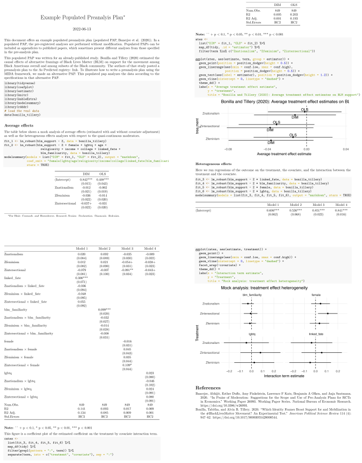

Populated preanalysis plan
A preanalysis plan describes how study data will eventually be analyzed, but those plans may change in the during the process of producing a finished report, article, or book. Inevitably, authors of pre-analysis plans fail to anticipate how the data generated by the study will eventually be analyzed. Some reasons for discrepancies were discussed in the previous section on pivoting, but others intervene as well. A common reason is that PAPs promise too many analyses. In writing a concise paper, some analyses are dropped, others are combined, and still others are added during the writing and revision process. In the next section, we’ll describe how to reconcile analyses-as-planned with analyses-as-implemented, but this present section is about what to do with your analysis plan immediately after getting the data back.
We echo proposals made in Banerjee et al. (2020) and Alrababa’h et al. (2022) that researchers should produce short reports that fulfill the promises made in their PAPs. Banerjee et al. (2020) emphasize that writing PAPs is difficult and usually time-constrained, so it is natural that the final paper will reflect further thinking about the full set of empirical approaches. A “populated PAP” serves to communicate the results of the promised analyses. Alrababa’h et al. (2022) cite the tendency of researchers to abandon the publication of studies that return null results. To address the resulting publication bias, they recommend “null results reports” that share the results of the pre-registered analyses. We think these reports (whether the results come back null or otherwise) can easily be added to the appendix of the final write up or included in a replication archive.
We recommended in Section (preanalysis-plan?) that authors include mock analyses in their PAPs using simulated data. Doing so has the significant benefit of being specific about the details of the answer strategy. A further benefit comes when it is time to produce a populated PAP, since the realized data can quite straightforwardly be swapped in for the mock data. Given the time invested in building simulated analyses for the PAP, writing up a populated PAP takes only as much effort as is needed to clean the data (which will need to be done in any case).
Example
In Section (planning?), we declared the design for Bonilla and Tillery (2020) following their preanalysis plan. In doing so, we declared an answer strategy in code. In our populated PAP, we can run that same answer strategy code, but swap out the simulated data for the real data collected during the study.
